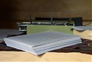

The Book

I am writing a book. I have been writing this book for almost a year now and I expect I have one year to go. I have been writing for almost five years now. I am purely self-taught. I strongly disagree with academics, with blogs-to-books, with writers-to-professors, with writers who cower and make no challenges with their words, with writers who insist on things like point-of-view, word counts, character development, plot, theme, ad nauseam. I strongly believe that those things are bullshit. I understand we all stink, but must we be putrid?
{kind=link}
I have never written anything on a computer, neither what is posted here nor the book. I do not think that is what makes me a better writer, but I think it has something to do with it. I have placed the photograph above (Click on it!) for you poor saps that must print your manuscript when you would like to take feel of it. It is the second stack, or draft, and needless to say, it makes me happy. The following two drafts I will advance by section; I will type each section again on the typewriter and then type it again into the computer. In this way, I may choose which medium number five will be best suited in.
I do not believe I can write too much.
My insults do not come out of me without purpose: writers must be enflamed. Everyone should be enflamed, we should be challenged, we should only accept that which we have striven towards accepting. It was not only my sturdy typewriter that has taught me this; it was my hunger for expression, my hunger for the largeness in life. What I harvest I have planted; it was my individuality that has sown the seeds, it is the strong rush of life that reaps them.
I am still young. I have much to learn.
I bend over to spy on the secret processes, to obey rather than to command. Third or Fourth Day of Spring, Henry Miller
Almost simultaneous to the finishing of this draft I received a voice of support from my good friends. Thank you! Thank you! to Kimberly and Ryan again! They have helped when I was just getting discouraged. Help is also needed over on Ryan’s site. He has vowed to take one polaroid a day for his thirtieth year. . . with the polaroid film situation at a soon halt, his hope to finish this project may be too. Check it out! Buy a polaroid! Help an artist!
For me the book is the man and my book is the man that I am, the confused man, the negligent man, the reckless man, the lusty, obscene, boisterous, thoughtful, scrupulous, lying, diabolically truthful man that I am. Third or Fourth Day of Spring again
I dare say, my book is nothing less either.
Thanks for reading!
Bracciano, Italy
April 2008
· · · · · · · · · · · · · · · · · · · ·